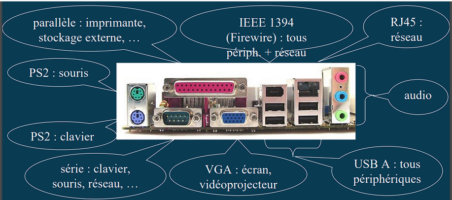
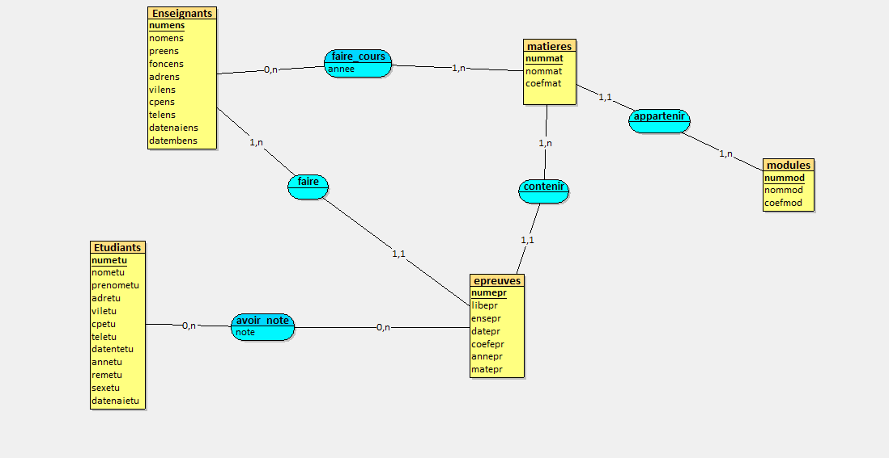

Compétence 3: Administrer des systèmes informatiques complexes
Compétences essentielles: J'ai installé et configuré un poste de travail
En sécurisant le système d'information
Niveau de maîtrise: assez
en appliquant les obligations légales et les bonnes pratiques architecturales et de sécurité
Niveau de maîtrise: assez
en offrant une qualité de service optimale
Niveau de maîtrise:

en assurant la continuité d'activité
Niveau de maîtrise:

Apprentissages critiques: J'ai appris et suis à même de configurer un poste de travail car
j'ai identifié les différents composants d'un système numérique
Niveau de maîtrise: peu

j'ai utilisé les fonctionnalités de base d'un système multitâches/multiutilisateurs
Niveau de maîtrise: assez
j'ai installé et configuré un système d'exploitation et des outils de développement
Niveau de maîtrise: assez

j'ai configuré un poste de travail dans un réseau d'entreprise.
Niveau de maîtrise: bien
Compétence 4: Gérer des données de l'information
Compétences essentielles: J'ai conçu et mis en place une base de données à partir d'un cahier des charges client
en respectant les réglementations sur le respect de la vie privée et la protection des données personnelles
Niveau de maîtrise: assez
en respectant des enjeux économiques, sociétaux et écologiques de l'utilisation et du stockage des données, ainsi que des différentes infrastructures
Niveau de maîtrise: peu
en s'appuyant sur des bases mathématiques
Niveau de maîtrise: assez
en assurant la cohérence et la qualité
Niveau de maîtrise: assez

Apprentissages critiques: J'ai appris et suis à même de réaliser un développement d'applications informatiques simples car
j'ai mis à jour et interroger une base de données relationnelle
Niveau de maîtrise: assez
j'ai visualisé des données
Niveau de maîtrise: bien
j'ai conçu une base de données relationnelle à partir d'un cahier des charges.
Niveau de maîtrise: bien